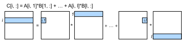

CPU 矩阵乘法#
NumPy 的 dot 算子在 CPU 架构 中几乎达到了 CPU (Xeon E5-2686 v4) 的性能峰值。在本节中，将研究 TVM 中该算子的多种调度策略。
配置#
%matplotlib inline
from tvm_book.contrib import d2ltvm
import numpy as np
import timeit
import tvm
from tvm import te
target = "llvm" #'llvm -mcpu=skylake-avx512'
正如在 CPU 向量加法 中所做的那样，首先定义了方法来测量 NumPy 的性能作为基准。
# Save to the d2ltvm package.
def np_matmul_timer(n):
timer = timeit.Timer(setup='import numpy as np\n'
'from tvm_book.contrib import d2ltvm\n'
'a, b, c = d2ltvm.get_abc(%s)' % str((n,n)),
stmt = 'np.dot(a, b, out=c)')
return timer.timeit
sizes = 2**np.arange(5, 12, 1)
exe_times = [d2ltvm.bench_workload(np_matmul_timer(n)) for n in sizes]
np_gflops = 2 * sizes **3 / 1e9 / np.array(exe_times)
默认调度#
默认调度由三个嵌套的 for 循环组成。
def default(n):
A, B, C = d2ltvm.matmul(n, n, n)
return te.create_schedule(C.op), (A, B, C)
s, args = default(64)
print(tvm.lower(s, args, simple_mode=True))
@main = primfn(A_1: handle, B_1: handle, C_1: handle) -> ()
attr = {"from_legacy_te_schedule": True, "global_symbol": "main", "tir.noalias": True}
buffers = {A: Buffer(A_2: Pointer(float32), float32, [4096], []),
B: Buffer(B_2: Pointer(float32), float32, [4096], []),
C: Buffer(C_2: Pointer(float32), float32, [4096], [])}
buffer_map = {A_1: A, B_1: B, C_1: C}
preflattened_buffer_map = {A_1: A_3: Buffer(A_2, float32, [64, 64], []), B_1: B_3: Buffer(B_2, float32, [64, 64], []), C_1: C_3: Buffer(C_2, float32, [64, 64], [])} {
for (x: int32, 0, 64) {
for (y: int32, 0, 64) {
C[((x*64) + y)] = 0f32
for (k: int32, 0, 64) {
let cse_var_2: int32 = (x*64)
let cse_var_1: int32 = (cse_var_2 + y)
C[cse_var_1] = (C[cse_var_1] + (A[(cse_var_2 + k)]*B[((k*64) + y)]))
}
}
}
}
为了评测它的性能，还定义了可重用的方法，就像在 CPU 向量加法 中做的那样。
# Save to the d2ltvm package.
def bench_matmul_tvm(func, sizes, target):
def workload(nrepeats):
timer = mod.time_evaluator(mod.entry_name, ctx, number=nrepeats)
return timer(a, b, c).mean * nrepeats
times = []
for n in sizes:
s, (A, B, C) = func(int(n))
mod = tvm.build(s, [A, B, C], target)
ctx = tvm.device(target, 0)
a, b, c = d2ltvm.get_abc((n, n), lambda x: tvm.nd.array(x, ctx))
times.append(d2ltvm.bench_workload(workload))
return 2 * sizes**3 / 1e9 / np.array(times)
默认调度遵循如下所示的计算 计算矩阵乘法的原始 C_{x,y}。默认的调度不能很好地执行，这并不奇怪，特别是对于无法放入缓存的大型矩阵。
default_gflops = bench_matmul_tvm(default, sizes, target)
d2ltvm.plot_gflops(sizes, [np_gflops, default_gflops], ['numpy', 'default'])
<Figure size 324x216 with 1 Axes>
重新排序轴#
计算矩阵乘法的原始 C_{x,y} 的第一个问题是矩阵 \(B\) 是按列访问的，而它的元素是按行存储的（即矩阵 \(B\) 属于 row-major ）。换句话说，在上面的伪代码中，在轴 k 之前迭代轴 y。只要简单地切换这两个 for 循环，就可以按顺序读取和写入所有元素。在矩阵乘法中重新排列坐标轴 说明了数据访问模式的改变。

在矩阵乘法中重新排列坐标轴#
为了实现它，通过 reorder 原语将轴的顺序从 (x, y, k) 更改为 (x, k, y)。
相应的伪代码验证我们现在正在逐行处理所有矩阵。
def reorder(n):
s, (A, B, C) = default(n)
(x, y), (k,) = C.op.axis, C.op.reduce_axis
s[C].reorder(x, k, y)
return s, (A, B, C)
s, args = reorder(64)
print(tvm.lower(s, args, simple_mode=True))
@main = primfn(A_1: handle, B_1: handle, C_1: handle) -> ()
attr = {"from_legacy_te_schedule": True, "global_symbol": "main", "tir.noalias": True}
buffers = {A: Buffer(A_2: Pointer(float32), float32, [4096], []),
B: Buffer(B_2: Pointer(float32), float32, [4096], []),
C: Buffer(C_2: Pointer(float32), float32, [4096], [])}
buffer_map = {A_1: A, B_1: B, C_1: C}
preflattened_buffer_map = {A_1: A_3: Buffer(A_2, float32, [64, 64], []), B_1: B_3: Buffer(B_2, float32, [64, 64], []), C_1: C_3: Buffer(C_2, float32, [64, 64], [])} {
for (x: int32, 0, 64) {
for (y.init: int32, 0, 64) {
C[((x*64) + y.init)] = 0f32
}
for (k: int32, 0, 64) {
for (y: int32, 0, 64) {
let cse_var_2: int32 = (x*64)
let cse_var_1: int32 = (cse_var_2 + y)
C[cse_var_1] = (C[cse_var_1] + (A[(cse_var_2 + k)]*B[((k*64) + y)]))
}
}
}
}
可以看到，与默认调度相比，重新排序显著提高了性能。
reorder_gflops = bench_matmul_tvm(reorder, sizes, target)
d2ltvm.plot_gflops(sizes, [np_gflops, default_gflops, reorder_gflops],
['numpy', 'default', 'reorder'])
<Figure size 324x216 with 1 Axes>
并行化#
重新查看上面的伪代码。在最外层的 for 循环 for (x, 0, 64) 中，每次计算 \(C\) 中一行的结果。每一行都可以并行计算，所以可以让调度并行化 x 轴。
def parallel(n):
s, (A, B, C) = reorder(n)
s[C].parallel(C.op.axis[0])
return s, (A, B, C)
s, args = parallel(64)
print(tvm.lower(s, args, simple_mode=True))
@main = primfn(A_1: handle, B_1: handle, C_1: handle) -> ()
attr = {"from_legacy_te_schedule": True, "global_symbol": "main", "tir.noalias": True}
buffers = {A: Buffer(A_2: Pointer(float32), float32, [4096], []),
B: Buffer(B_2: Pointer(float32), float32, [4096], []),
C: Buffer(C_2: Pointer(float32), float32, [4096], [])}
buffer_map = {A_1: A, B_1: B, C_1: C}
preflattened_buffer_map = {A_1: A_3: Buffer(A_2, float32, [64, 64], []), B_1: B_3: Buffer(B_2, float32, [64, 64], []), C_1: C_3: Buffer(C_2, float32, [64, 64], [])} {
for (x: int32, 0, 64) "parallel" {
for (y.init: int32, 0, 64) {
C[((x*64) + y.init)] = 0f32
}
for (k: int32, 0, 64) {
for (y: int32, 0, 64) {
let cse_var_2: int32 = (x*64)
let cse_var_1: int32 = (cse_var_2 + y)
C[cse_var_1] = (C[cse_var_1] + (A[(cse_var_2 + k)]*B[((k*64) + y)]))
}
}
}
}
parallel_gflops = bench_matmul_tvm(parallel, sizes, target)
d2ltvm.plot_gflops(sizes, [np_gflops, default_gflops, reorder_gflops, parallel_gflops],
['numpy', 'default', 'reorder', 'parallel'])
<Figure size 324x216 with 1 Axes>
并行化再次提高了性能。但可以看到，与 NumPy 相比，在大型矩阵上仍然存在差距，特别是当它们无法放入 L2 缓存时。将在下一节中解决它。
小结#
对矩阵乘法中的 for 循环进行适当的排序可以提高性能。
适当的线程级并行也可以提高性能。
练习#
更改线程数
尝试用不同的
parallel方法排列坐标轴更大尺寸的基准矩阵乘法